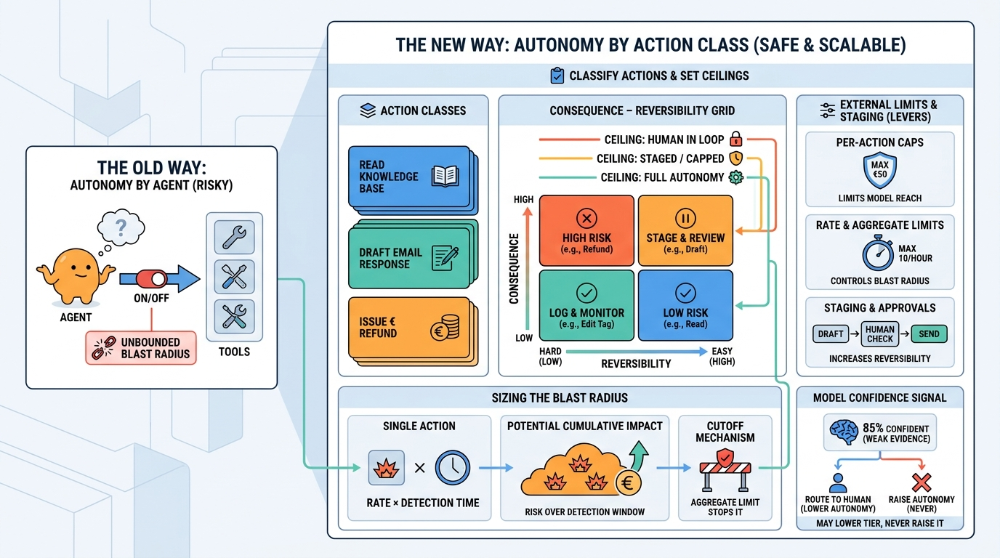

Part I — FOUNDATIONS: When a System Should Be Agentic
Autonomy, Reversibility and the Cost of Being Wrong
AI-assisted: written with Claude Code, images generated with the Gemini API. How this works

Image generated by Google Gemini (gemini-3-pro-image-preview)